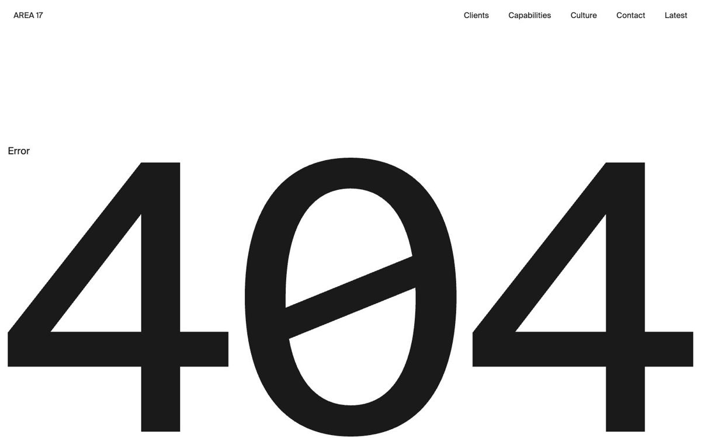
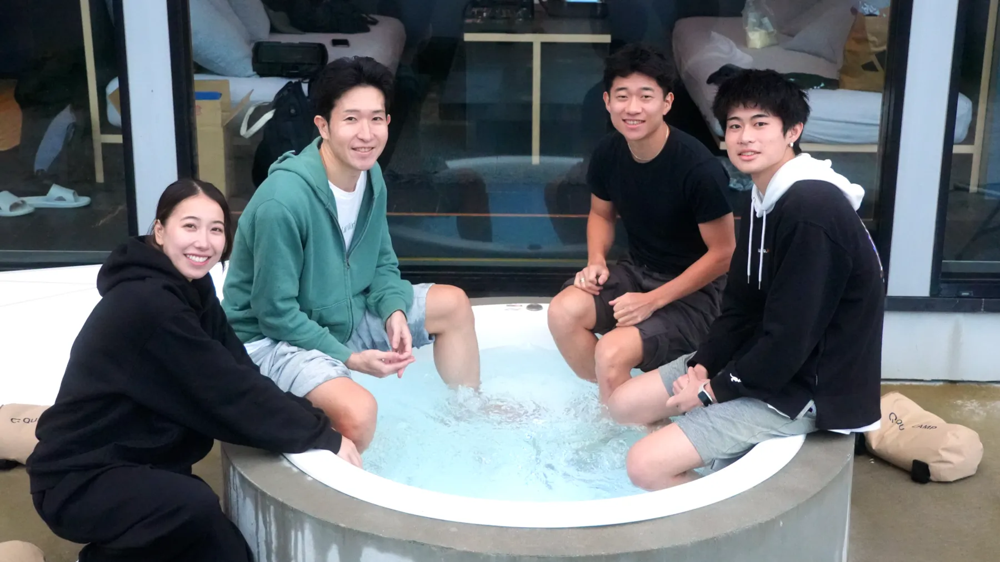

本番の文は一字も変えていません（英語の飾りだけ足しています）。明るい地で1画面に収まる3案。
2文だけのページ。1画面で完結させる。問い合わせフォームは送信しない作りのまま。
Thank you
2営業日以内に折り返しご連絡させて頂きます。数日経過後も弊社からの連絡がない場合は、ご入力頂いた連絡先に誤りのあった可能性が考えられますので、再度お問い合わせをお願いいたします。

Thank you.

トップと同じフッターを下層にも置きます。